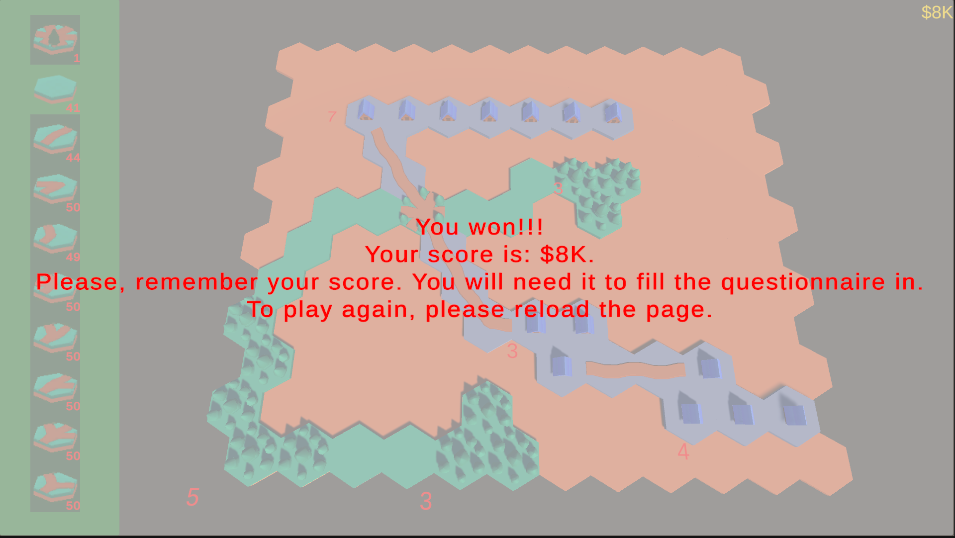
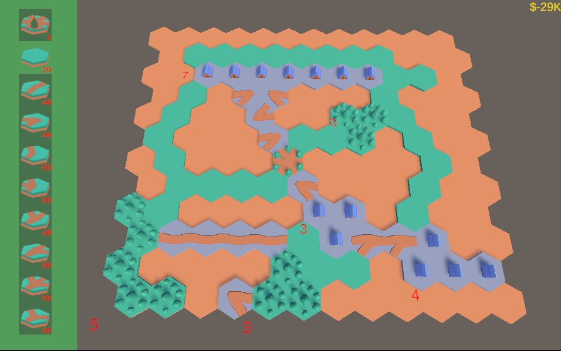

You play it on your computer, preferably from Google Chrome browser. You have green zones and gray/purple zones. You can connect green zones with whole green roads. You can connect gray/purple zones with correctly placed roads. You also have a couple of roads that can connect anything. First, connect all green zones, then all gray zones. Do not connect green and gray zones together. When you are done, please complete this questionnaire.
If you play good, you should get a picture similar to this:
But please, avoid this:
Good luck playing!